6.810 Engineering Interactive Technologies (fall 2020)
Problem Set Series: Multi-Touch Pad

Problem Set 2
Now that you have the hardware ready, you will write some code for the sensing part of your multi-touch pad. In particular, you are going to do the following four steps:
- (1) Generate the appropriate PWM signal for the sender pin that is connected to the Multiplexer
- (2) Configure the Multiplexer to select the right output channel for sending the signal to the appropriate column of your multi-touch pad
- (3) Set up the ADC pins with the MCP3008 chip and SPI
- (4) Read and record analog signals from receiver pins in Serial channel
(1) Generate appropriate PWM signal
Below, you see the circuit schematic from pset1 again.
The marked area is the sending circuit.
You already build this on your breadboard, now we will code up the "Sending" part of the circuit!
br>

Programming the PWM Signal
We will start by generating the PWM signal for the circuit.
You can download the skeleton code for the PSet2 from here.
Why do we need a PWM Signal?
For our multi-touch pad to work, we need a signal that looks like a sine wave.
However, the ESP by default is not able to do this. Instead the only thing that the ESP can generate, is a signal that is a square wave (e.g. by setting a pin to HIGH, then setting it to LOW subsequently).
So how can we generate a square wave that approximates the sign wave that we need best?
For this, we first need to know, what sign wave to we actually need!
The sign wave we need is around 10MHz.
The reason for this is that in this frequency range the finger can be considered a conductor that couples both electrodes. (We know that in the frequency ranges from 100 kHz to 40 MHz the electric field around the body behaves as a quasi-static near-field.
We will have a TX electrode transmits a signal in the MHz range, and in this frequency range, the quasi-static electric field allows for strong capacitive coupling between the TX electrode, the finger, and the RX electrode.)
So now the question is, how can we make a 10MHz signal based on square waves?
So one square (pulse-width) actually consists of multiple overlapped sine wave signals of different frequencies. Those are generated with the microcontroller all at the same time with the microcontrollers internal clock, which works at 80 MHz. To generate different signals, the microcontroller has different internal timers that sample the signal at different rates (each time the clock creates a new signal we can change the internal state, so depending on how often the timer samples we get a different signal frequencies) and then overlaid over each other forming the square-signal. The good news is we don't have to do this ourselves, we just give the overall frequency of the square wave and the microcontroller will do all the timer business!
We now know that the square wave is not a square wave but made from a bunch of different sine signals. So first we need to figure out which sine waves make up the square signal. The type of sine waves is determine by the length of the duty cycle (length of square) and the overall frequency.
So to have a square wave, we will have to turn on/off. We need to match 10MHz, so to have half on/off, we need a 50% duty cycle which would be 5MHz.
The signal that we are generating for the TX electrodes is 4 MHz, 25% Duty Cycle.
Here’s the steps you’ll have to follow to set up the ESP32 PWM using the Arduino IDE:
1. First, you need to choose a PWM channel. There are 16 channels from 0 to 15.
2. Then, you need to set the PWM signal frequency, in our case 4 MHz.
3. You also need to set the signal’s duty cycle resolution. you have resolutions from 1 to 16 bits.
4. Next, you need to specify to which GPIO or GPIOs the signal will appear upon (don't forget to set the correct PinMode).
5. Generate the PWM signal with a duty cycle value.
The ESP32's default clock is 80 MHz.
, and the duty resolution can be lowered down to 1 bit in which case the maximum frequency is 40 MHz, but only the duty of 50% is available.
Pulse Width Modulation, or PWM, is a technique for getting analog results with digital means.
Digital control is used to create a square wave, a signal switched between on and off. This on-off pattern can simulate voltages in between full on (3.3 Volts) and off (0 Volts) by changing the portion of the time the signal spends on versus the time that the signal spends off.
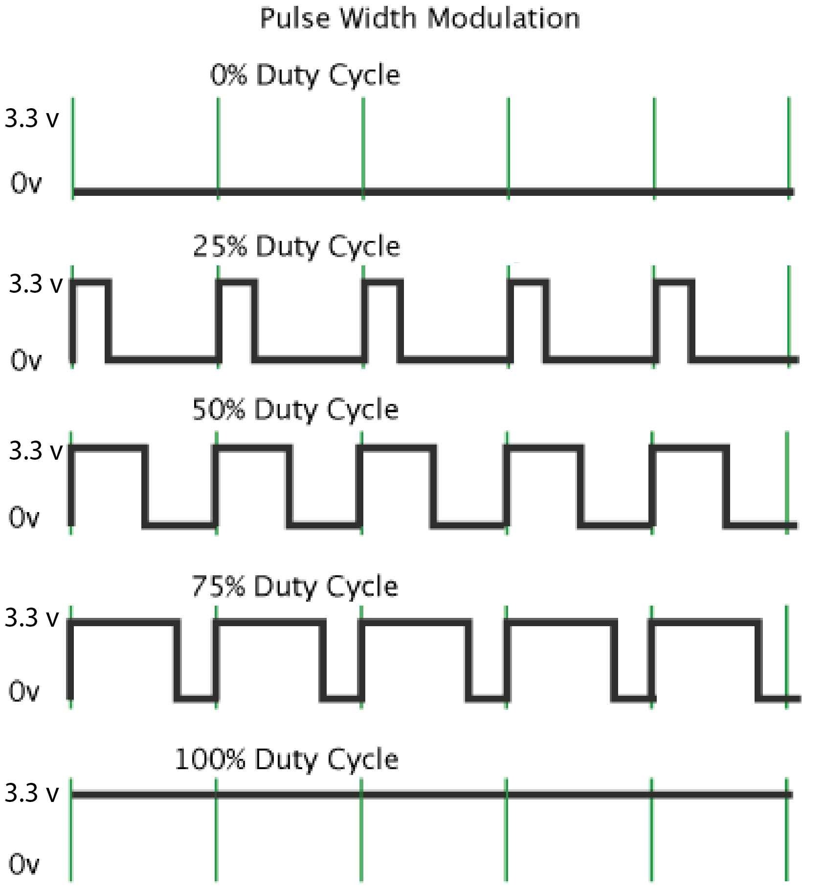
For step 1-3, you can use the following function:
ledcSetup(PWM_Channel_Number, Frequency, duty_resolution)
Notice that the frequency and duty resolution of the PWM signal has an inverse effect on each other.
The ESP32's clock is 80 MHz, and the duty resolution can be lowered down to 1 bit in which case the maximum frequency is 40 MHz, but only the duty of 50% is available.
The available duty levels are (2^bit_num)-1, where bit_num can be 1-15.
The maximal frequency is 80000000 / 2^bit_num.
We will let you figure out the correct values for those parameters :)
For step 4, you can use the following function:
ledcAttachPin(GPIO_PIN , PWM_Channel_Number)
For step 5, you can use the following function:
ledcWrite(PWM_Channel_Number, DUTY_CYCLE):
The code should be inside of the "setupPWM()" function in the skeleton code.
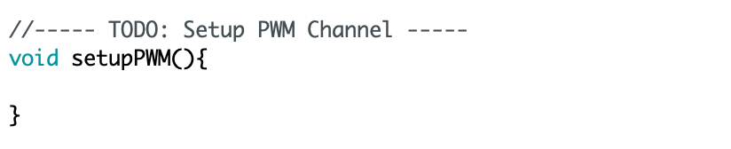
You can test if you have the correct signal via an oscilloscope.
(2) Sending: Configure the Channel Selection for the Multiplexer
Next, we will write up the function that determines to which pin the multiplexer will send the signal as output.
Refresher from pset1
Remember that the multiplexer in 'de-multiplex' mode takes the signal from one sender pin on the ESP and distributes it to the different sender columns on your multi-touch pad.
Below is the image from pset1 again for your reference.

Also remember that the S0 - S3 pins are used to create the address that determines which column pin (C0-C15) the input signal (SIG) should be send to. The image of the multiplexer from pset1 is shown below again for your reference.

To tell the multiplexer which pin the output signal should be send to, you need to create the desired output address using the four pins S0-S3. Why four pins? The multiplexer expects a binary signal, e.g. sending 0,0,0,0 to S0-S3 results in the output pin C0, vs. 0,1,1,0 sends the signal to C6.
Let's create the multiplexer addressing in code
First, check which pins your multiplexer is wired to.
In particular, you need the GPIO pin numbers for the multiplexer's S0 - S3 pins.
Create the digital pins in your Arduino code and set the correct PinMode.
Next, fill out the "selectChannelOut(int channel)" function in the skeleton code.
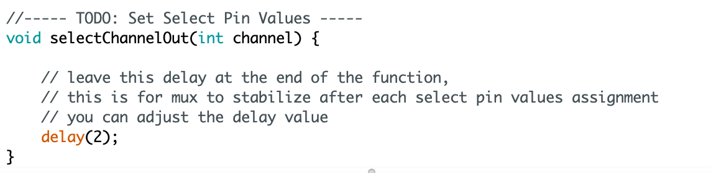
The function takes an int for channel number and assigns the correct bit values to the 4 select pins (S0 - S3).
Since our multi-touch pad is 8x9 electrodes, the channel numbers are either 0-7 or 0-8 depending on which dimension you chose for sending.
You can test if the function works properly by assigning specific output channel number and test the value on the select output channel to see if it is assigned with the signal. (what do you mean? on the hardware? in the terminal?)
You can test that by an oscilloscope or a multimeter.
(3) Receiving: Set up the ADC pins with MCP3008 chip and SPI
Now that we have the sending all setup, you can move onto the "Receiving" part of the circuit.
Refresher from pset1
Recall the circuit schematic from PSet1.
In the schematic, all receiver rows (RX) are connected to analog-to-digital converter (ADC) pins.

In pset1, you already connected all your receiver rows to such pins, i.e. to either an analog-to-digital (ADC) converter pin or to a capacitive touch sensing pin (TOUCH) (which is also an ADC pin but provides a cleaner signal).

(can you add why we need to analog to digital conversion? is this because of the PWM signal?)
Replacing the ADC pins
Unfortunately, the ESP32 ADC/TOUCH pins are only reliable in the middle of the ESP's voltage range (~0.5V to maybe 3.0V) but not at the lower and upper ends of the range. Our touch sensing circuit functions at the lower range, i.e. mostly between XXV and YYV. Even worse, because we use XXX to get YY working, we end up with negative voltages on the ADC pins, which are completely out of the spec of the ESP32's ADC inputs. (put back when clear how that relates to the rest: Since we are practically generating an AC signal with the PWM, plus the capacitive coupling effect between breadboard channels and wires under high frequency signal). Under these circumstances, the signal will behave non-linearly and would require a lot of calibration. You could fix this by adding rectification circuits and amplifiers before having the signal go into the ADC pin, but that is quite some extra effort. For our purposes, it is therefore easier to not use the ESP ADC pins and instead use another ADC component that can work well within the Voltage range we use for the multi-touch pad.
Wiring up the new ADC Component
The component you will use to have better ADC channels is the MCP3008 chip.
You can find the datasheet for MCP3008 here.
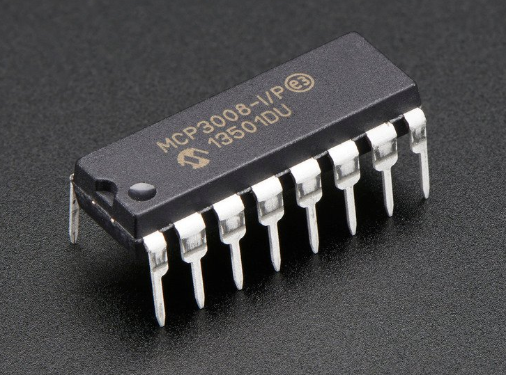
, and communicate with ESP32 via SPI.
The pinout of the MCP3008 chip and circuit schematic are shown down below:
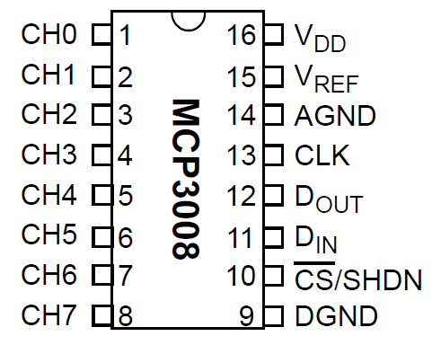
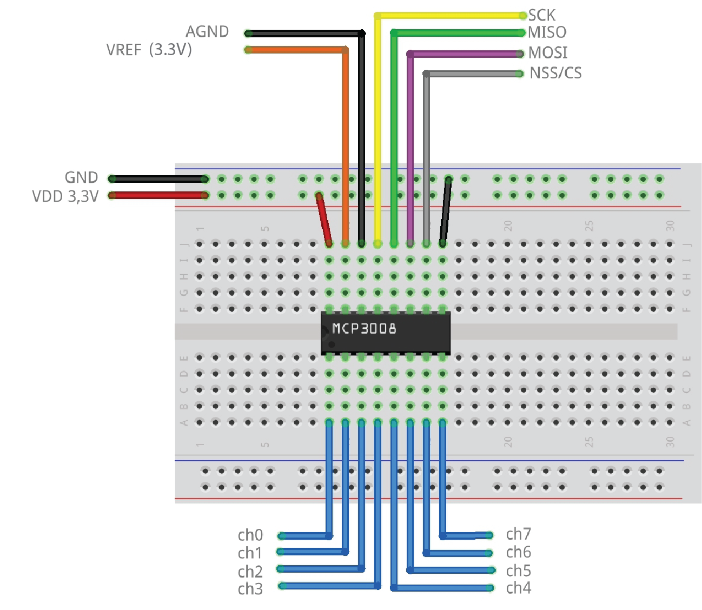
You will also find the following ESP32 pinout useful for identifying SPI pins:
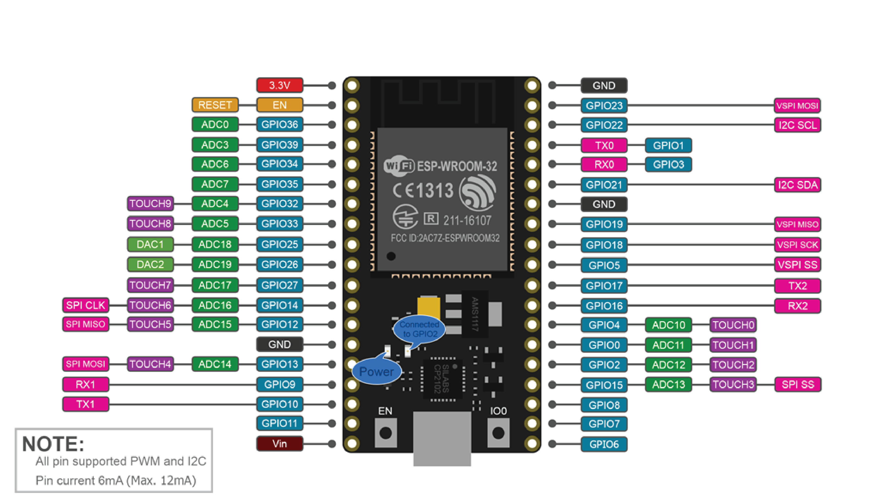
Once you have the circuit build up, you can download the MCP3008 library and construct & initialize it in the skeleton code.
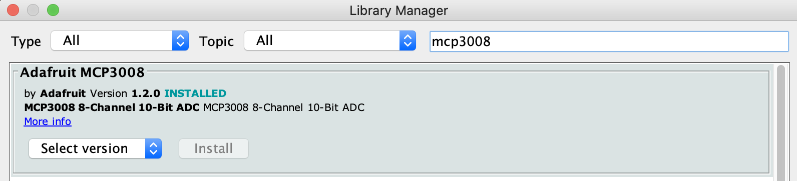
You can check if the ADC channels working properly on the MCP3008 by connecting a signal (e.g. 3.3V, random output pin on ESP32 set to HIGH etc.) to MCP3008 channels and see if the reading make sense.
This is better in terms of scalability as well, since you can connect multiple ADC chips with SPI simultaneously, which allows us to arbirarily add more ADCs using a common SPI bus (so 4 pins gives 8 ADC channels and 5 pins gives 16 etc.).
(4) Read and record analog signals from receiver pins in Serial channel
Now that you can fill the "loop()" function and do the actual sensing!
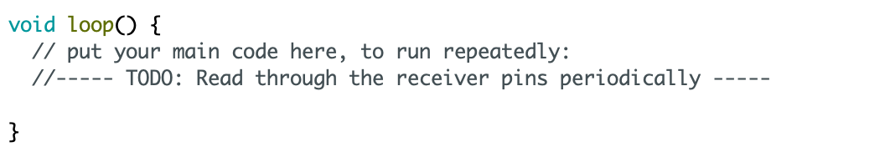
You should read through the receiver pins periodically like following:
- assign one output channel (sender pin) through the Multiplexer
- read through the receiver pins one by one through MCP3008 via SPI
- move on to the next output channel (sender pin) and repeat
You should serial print the data in the following format:
sender-channel-num0,receiver-ch0-val,receiver-ch1-val,receiver-ch2-val,...,receiver-ch7-val
sender-channel-num1,receiver-ch0-val,receiver-ch1-val,receiver-ch2-val,...,receiver-ch7-val
......
A sample serial output could be:
0,3,2,1,3,4,5,2,4
1,4,3,5,1,3,7,5,2
...
If you open up the Serial Plotter, it should have something look like following when the multi-touch pad is not touched:
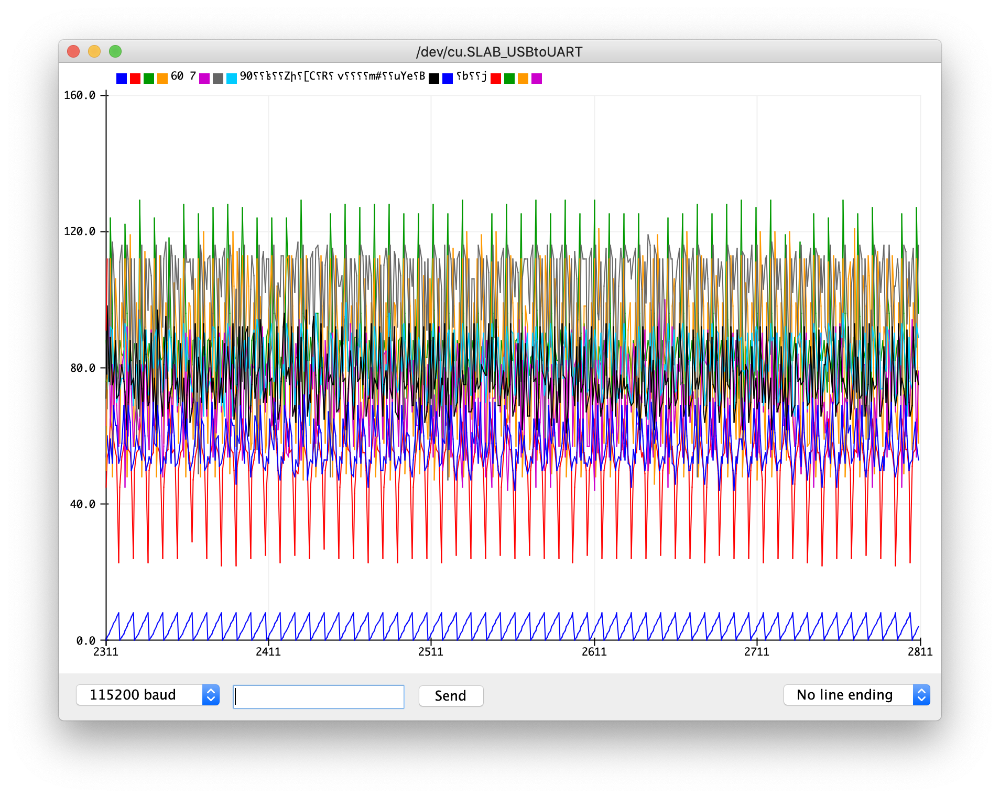
And something look like these when touched & released (visually noticeable changes in raw value plot):
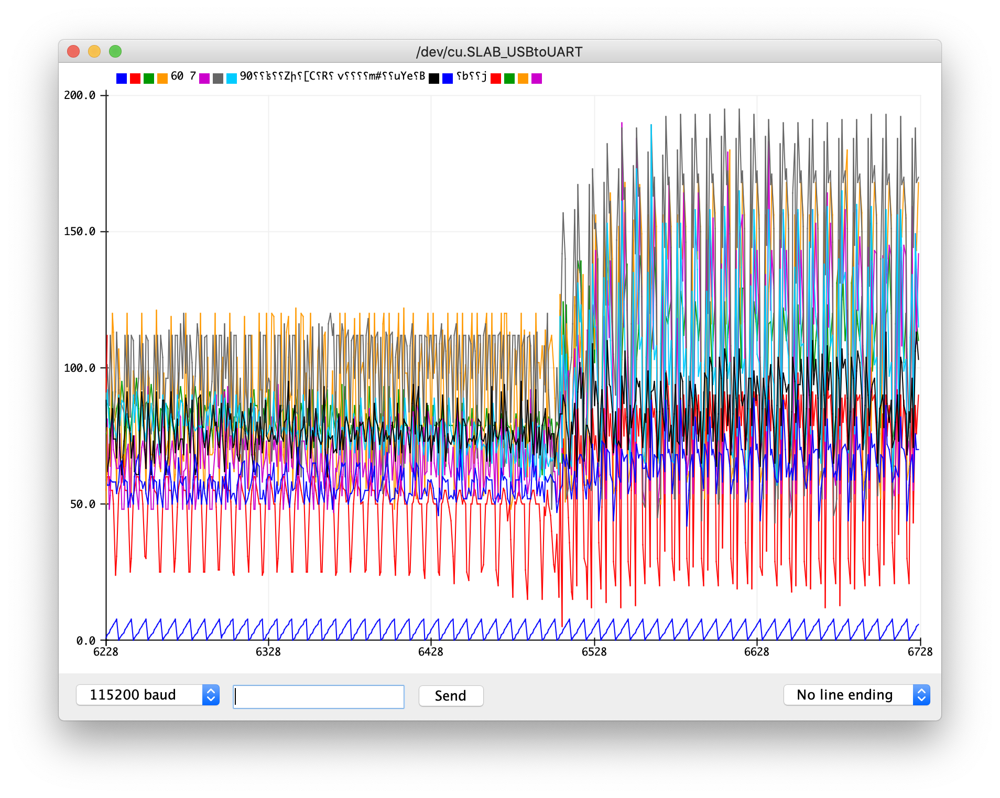
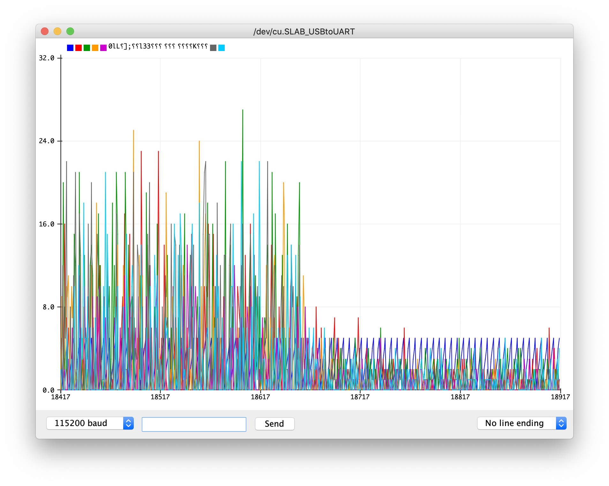
Grading
We will give 25 pts in total:
- 5 pts: you finished all for steps of the task.
- 5 pts: PWM signal configuration and generates correctly.
- 5 pts: output channel selection on Multiplexer working properly.
- 5 pts: MCP3008 chip wired up and comminicates with ESP32 via SPI correctly.
- 5 pts: receiver data read and record correctly.